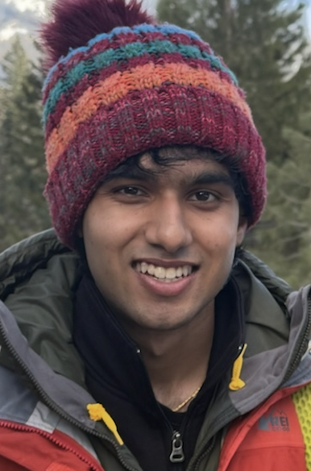

I'm an undergraduate studying Electrical Engineering and Computer Sciences (EECS) at UC Berkeley. I'm interested in the theory of machine learning, and I'm fortunate to be advised by Nika Haghtalab at the Berkeley AI Research Lab (BAIR). I also have a deep interest in physics, which has shaped much of the way I think.
In the past, I mainly worked on Electronic Design Automation (EDA) tools at the Berkeley Wireless Research Center. Outside of academics, I enjoy biking, history, and watching movies.
As a child, I spent hours biking around the local regional parks nearly every day, always amazed by the Earth's natural beauty. I remember watching Cosmos on TV and thinking the universe was the coolest thing there was. I wasn't a great student, though. I struggled to learn addition and subtraction, failed the English standardized tests, and for a while my parents worried I wouldn't amount to much.
My interest in physics didn't really reawaken until 11th grade, when I found Morin's red book and my studies actually began. I loved the problems and the way Morin presented concepts, and I fell in love with how physicists think: how so many phenomena could be described by a single set of laws. I did decently in math and physics competitions, probably well enough to get into Berkeley for EECS. (I'm still not sure why I put EECS; I probably should have put physics.)
When I got to Berkeley, I wasn't sure what I wanted to do within EECS. I happened to sign up for the honors E&M class (Physics 5B), where I met friends who convinced me to take more physics. For a while I drifted between topics. I got into EDA, and later wanted to work on device physics, enough that I signed up for a graduate class in solid-state electronics. When that class was canceled, I took graduate algorithms by chance, and it turned out to be transformative.
In algorithms, I saw math used beautifully outside of physics for the first time. I think what struck me most was that algorithms are independent of the universe. After that, I took a course on deep reinforcement learning, and I was amazed at how powerful deep neural networks were. But I guess the physicist in me was still unsatisfied. I believe the one thread in my life, from Morin to algorithms, has been the search for a consistent and elegant theory. I remember Einstein's line: "Everything should be made as simple as possible, but not simpler." I feel like deep learning today is a lot like the steam engine in the 1800s. Everyone can see how important it is, but as Carnot said about steam engines back then, "their theory is very little understood."
I still study physics, though. I'm not especially religious, but learning physics has always felt a little like studying creation.
I mostly listen to alternative/indie rock and dream pop (I love The Strokes). I like playing basketball; I'm a bad defender and a worse shooter.
